Licorería
& Discoteca
Del frontend en React al despliegue contenerizado, con las correcciones del docente en el medio.
Un local, dos negocios, una plataforma
Plataforma web integral para una licorería de mostrador y discoteca de una sola sucursal: la web pública para clientes y el sistema interno para el personal.
- Cliente: menú digital, tasas y reservas con seña.
- Personal: POS, cuentas, mesas, KDS, inventario, compras y caja.
- Dueño: dashboard de KPIs, reportes y auditoría.
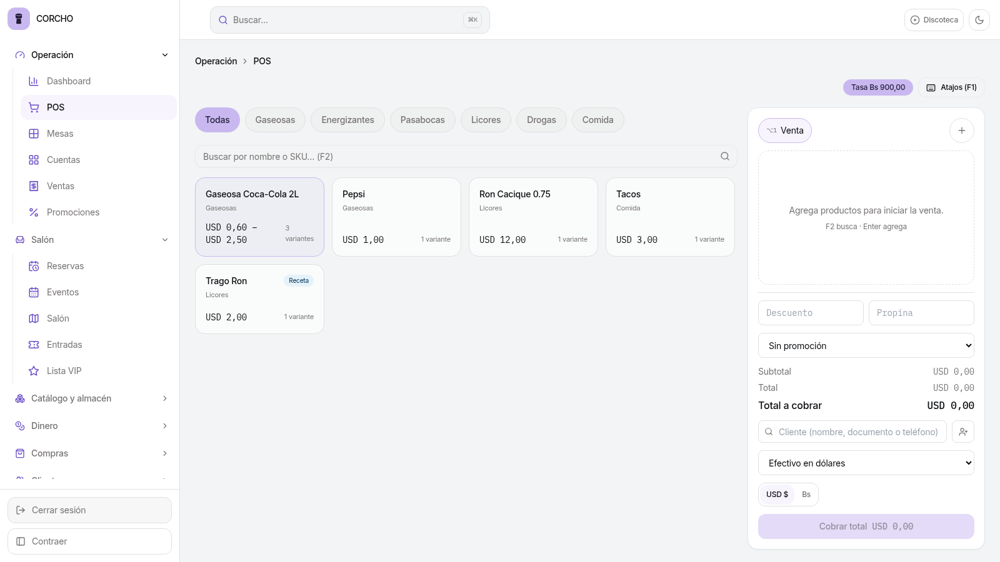
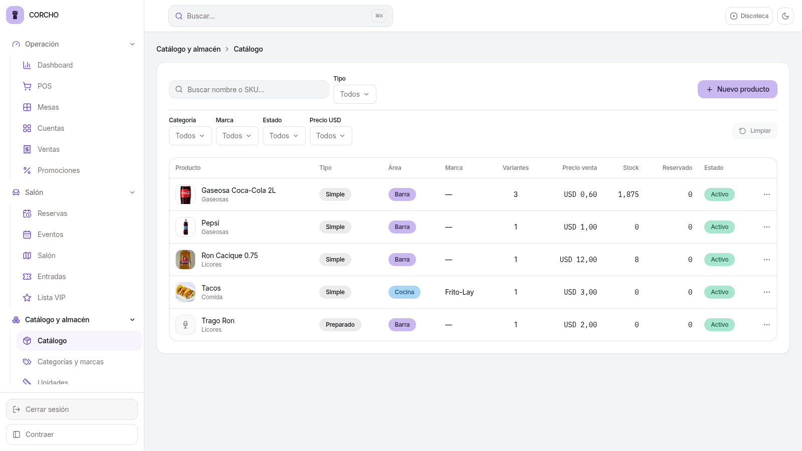
¿Con qué lo construimos?
Backend
.NET 10 con Onion Architecture (Domain, Application, Infrastructure, WebAPI), JWT + RBAC y SignalR para tiempo real.
Base de datos
PostgreSQL 15 con EF Core, migraciones automáticas, restricciones CHECK y secuencias.
Frontend
React + TypeScript + Tailwind, Vite, TanStack Query, React Hook Form + Zod y Recharts.
Pruebas
xUnit + Moq en backend, Vitest + Testing Library + MSW en frontend.
Contenedores
Docker Compose multi-stage y GitHub Actions como pipeline de CI/CD.
Proceso
OpenSpec: cada mejora nace como propuesta, diseño, specs y tareas antes de tocar código.
Fase 4: el frontend completo
- JWT + refresh, RBAC en UI y SignalR en vivo.
- POS, plano interactivo, KDS y pagos USD/Bs.
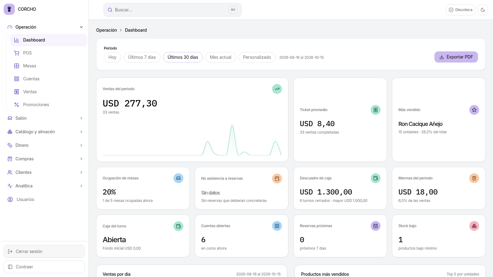
Cinco observaciones, cinco specs
Desarrollar la suite de pruebas unitarias que falta para validar la lógica de negocio.
Nuevos KPIs relevantes y ajustar el tamaño de las gráficas del Dashboard.
Generar y exportar reportes en formatos PDF y Excel.
Precargar un croquis en el lienzo y restringir la edición del mobiliario a empleados.
Refinar la paleta de colores y el diseño visual de la interfaz.
Pruebas unitarias que validan el negocio
Qué se probó
Con Moq y casos exitosos, de borde y de error: Inventario, Caja, Compras, Usuarios, Auditoría, Kardex, Autenticación y Reportes, además de validadores de entrada y conflictos de concurrencia.
Cómo se garantiza
dotnet test queda verde sin PostgreSQL (las pruebas de integración se omiten con motivo visible y fallan en CI). Un arnés de concurrencia repite 10 veces el caso de la última Coca-Cola. Cobertura con coverlet + reporte HTML.
Nuevos KPIs y gráficas a medida
- Ventas y producto: ticket promedio, más vendido, rotación.
- Operación: ocupación de mesas, no-show, descuadre de caja, mermas.
- Mesonero: comandas, ventas y tiempo de servicio.
- Dashboard: selector de periodo y gráficas de altura uniforme.
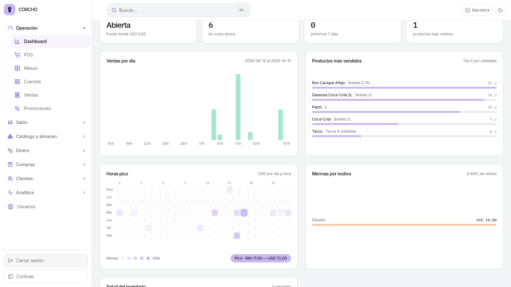
Reportes en PDF y Excel
- 10 reportes exportables: ventas, inventario, compras, propinas, mesoneros, caja, ocupación y auditoría.
- PDF con QuestPDF, hasta 5 000 filas.
- Excel con ClosedXML, hasta 100 000 filas, encabezado congelado y filtro.
- Respeta los filtros de pantalla y el permiso de cada consulta.
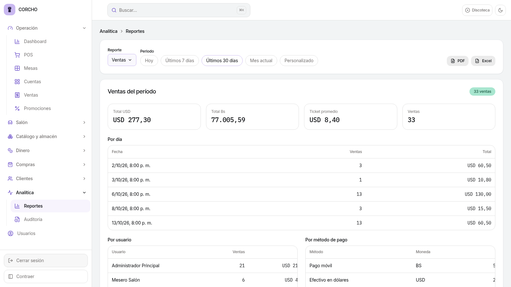
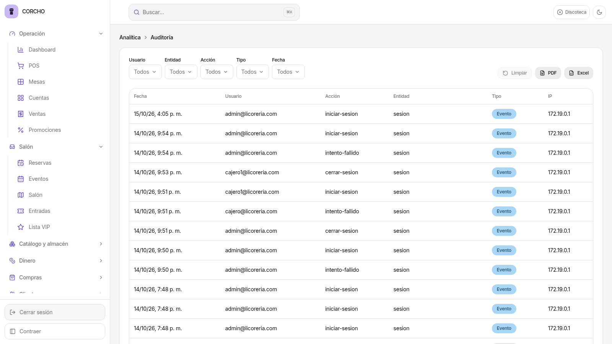
Croquis en el lienzo y edición solo del Administrador
- Croquis de fondo PNG, JPG o WebP (máx. 5 MB) con opacidad y ajuste.
- Duplicar y plantillas para probar una distribución sin tocar la vigente.
- Permiso club:layout solo el Administrador edita planos, zonas y mesas; el resto los ve en solo lectura.
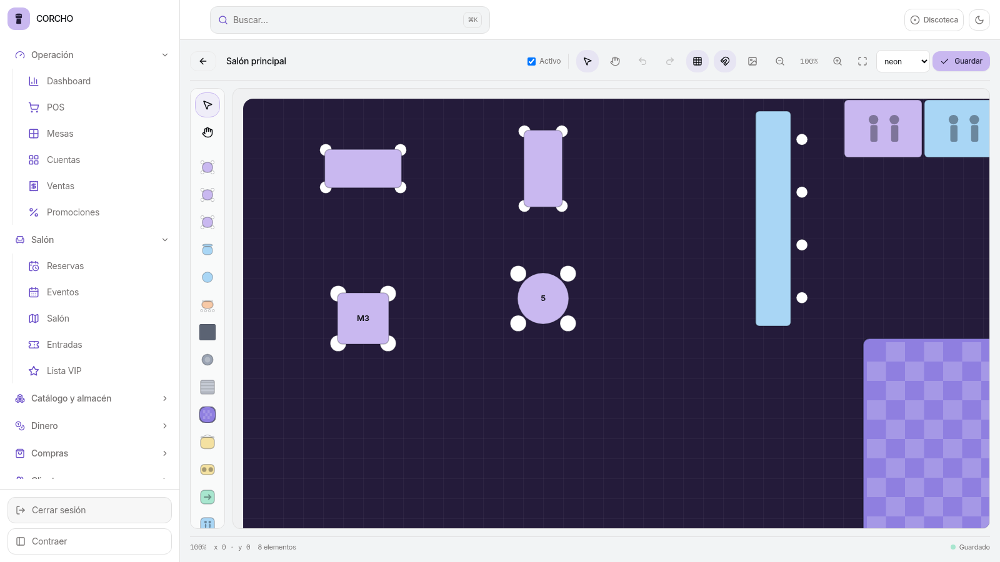
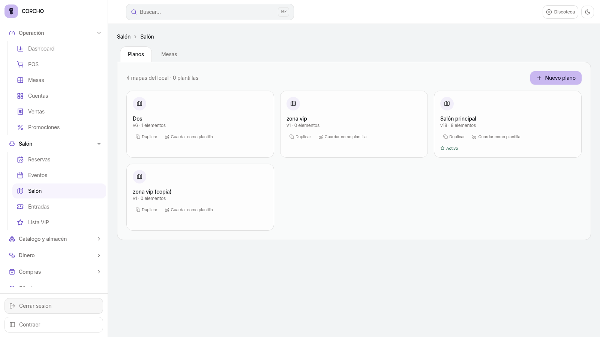
Paleta y diseño más coherentes
- Patrón único en todos los módulos: toolbar con buscador, filtros y acción.
- Barra de filtros en tarjeta en Dashboard y Reportes.
- Nueva marca: logo de corcho de champán.
- Cajero con navegación mínima, sin vistas de gestión.
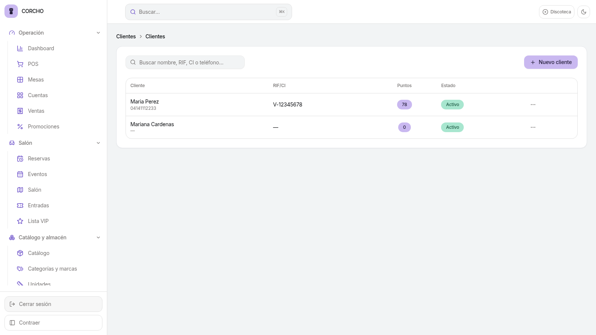
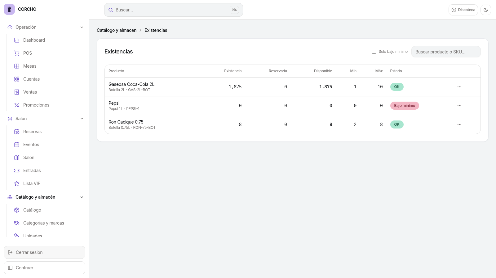
Cuatro specs que robustecieron el sistema
Concurrencia de stock
Reserva al pedir, reintento acotado y 409/422 claros. Cero ventas sobre la misma botella.
Presentaciones y porciones
Botella 1 L o 2 L, vasos, tragos y envases abiertos por la barra.
Auditoría total
Quién cambió qué, con antes y después, dentro de la misma transacción.
Módulos complementarios
Clientes, puntos, fiado, compras, promociones y lista VIP reactivados.
Fase 5: todo en contenedores
depends_on con service_healthy: la API espera a la base y la SPA espera a la API. Imágenes multi-stage; la API solo para linux-musl-x64.
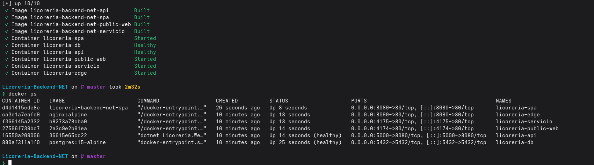
SPA localhost:8080 · Swagger localhost:5000/swagger
CI/CD con GitHub Actions
- backend-ci: restore, build y xUnit + Moq.
- frontend-ci: npm ci, test y build.
- Solo si todo pasa: artefacto de la API y construcción de las imágenes Docker.
- Umbral de 75 % de cobertura verificado en el pipeline.
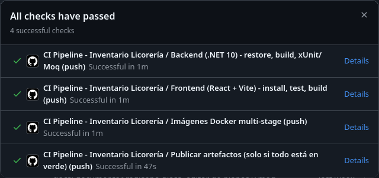
Dominio en 4 dimensiones y demo del Dashboard
Identificación
Nombre, marca, categoría, SKU y EAN-13.
Financiera
Precio de compra y venta, impuesto.
Umbrales
Cantidad, stock mínimo y máximo.
Logística
Unidad de medida y Ubicacion (migración nueva).
- Dashboard con más KPIs y exportación a PDF.